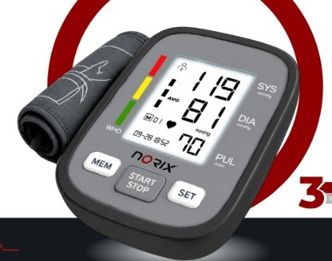
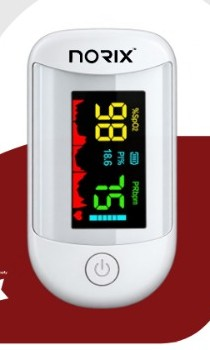
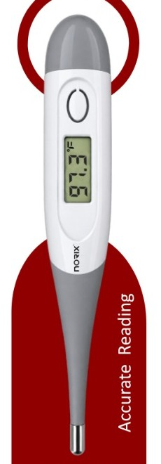

01
120/80mmHg
MONITORING / CARDIOVASCULAR
Blood pressure
monitors
Clear readings and considered controls for a more confident daily routine.
Enquire about this range ↗01

BNX SERIES / 01MONITORING / CARDIOVASCULAR
Blood pressure
monitors
Digital monitors with a large display and simple one-touch operation.
BNX-1101 · BNX-1151
Enquire about this range ↗02
N+
RESPIRATORY / HOME & CLINIC
Nebulizers
Practical respiratory care, thoughtfully shaped for use at home or in clinical settings.
Enquire about this range ↗02

PNX-1301 / 02MONITORING / OXYGEN SATURATION
Pulse
oximeters
A compact fingertip monitor with a high-definition display and rotating screen.
PNX-1301
Enquire about this range ↗03
37.0°
MONITORING / TEMPERATURE
Thermometers
Quick, straightforward temperature readings for everyday healthcare needs.
Enquire about this range ↗03

TNX-1201 / 03MONITORING / TEMPERATURE
Digital
thermometers
One-touch digital reading with a flexible tip and last-reading recall.
TNX-1201
Enquire about this range ↗